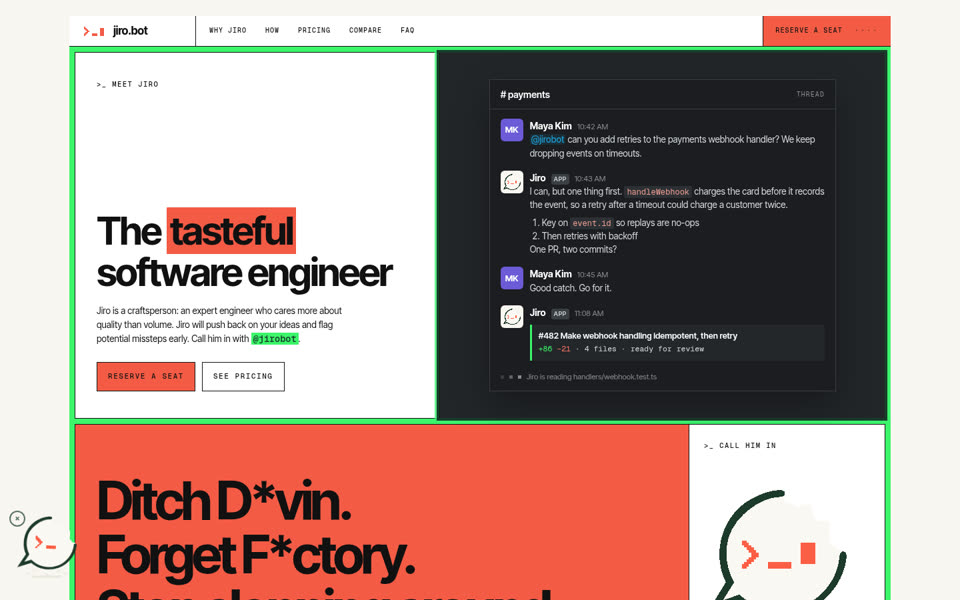
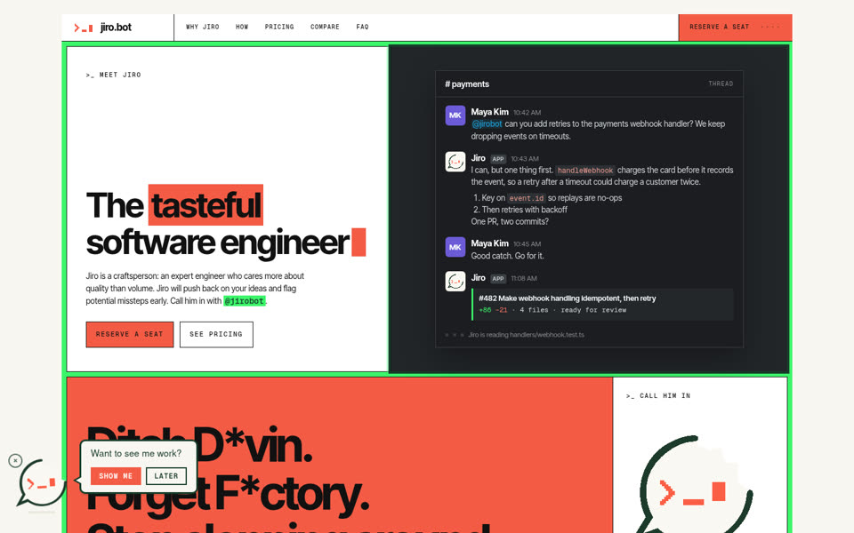
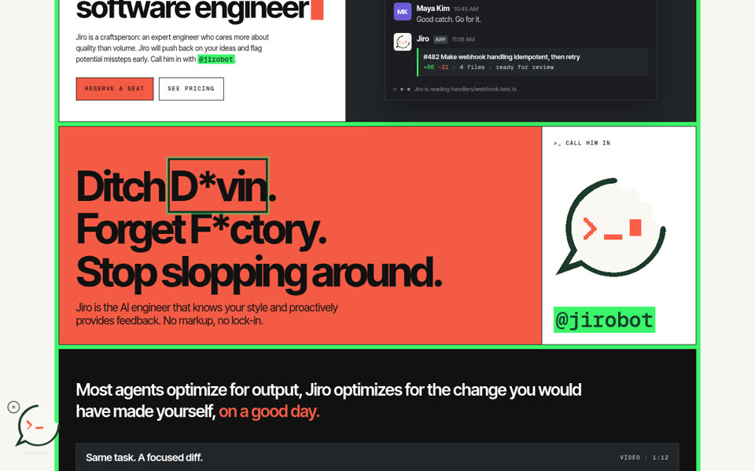
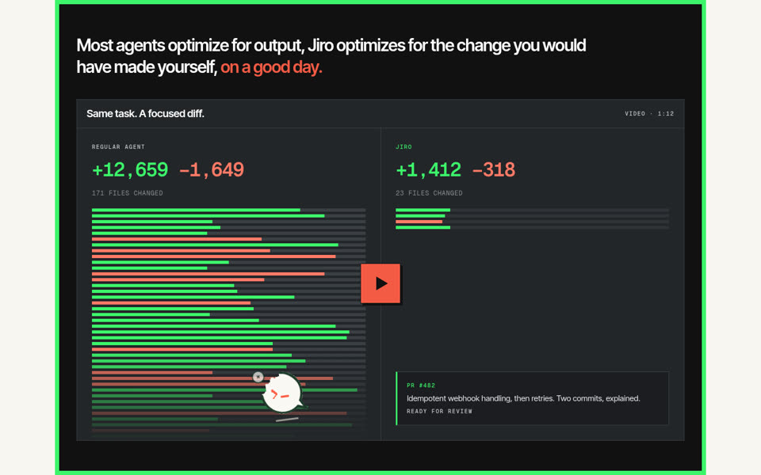
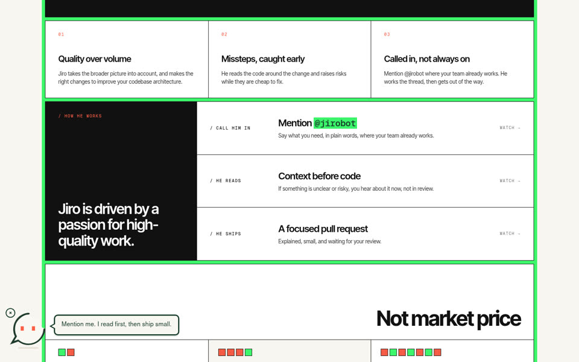
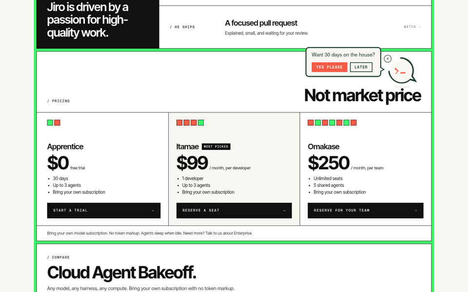
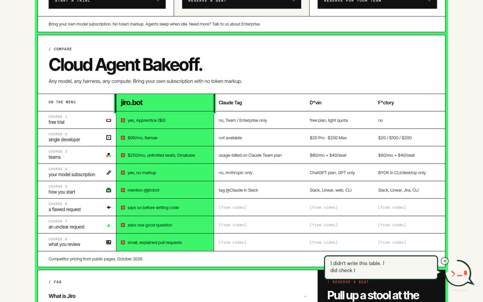
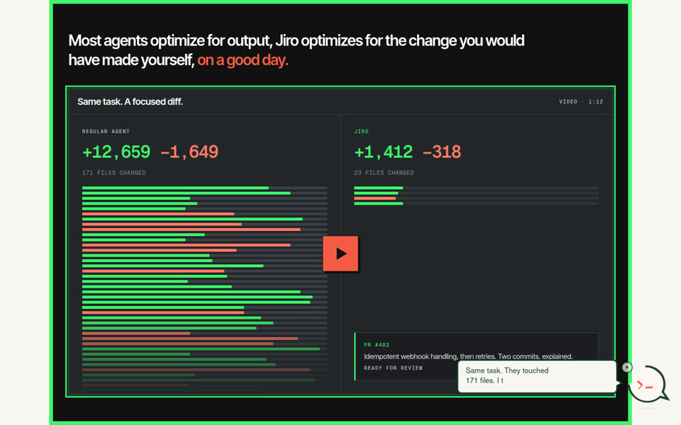
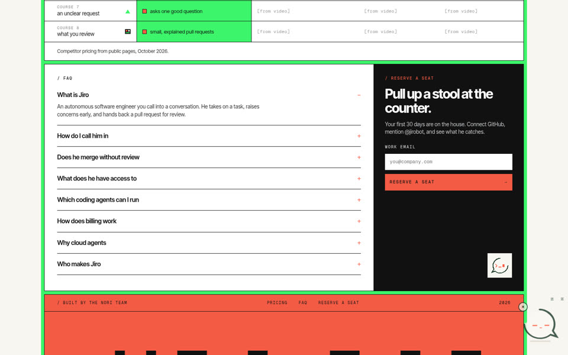

Jiro lives in a corner of the page while you scroll. He hops between sides, perches on one heading, looks at what he's about to talk about, thinks, then says one line per section. He never repeats himself unless you click him.
The 20-second idle before he falls asleep is sped up 9×. The recording is compressed; the live demo is the real thing.

Slides half into view from the left edge, glances around, ducks back, then jumps in and lands with a little dust puff.

Want to see me work?
Show me scrolls to the video. Later closes the bubble.

I censored them myself. Professional courtesy.

Crouches, arcs over the page with a tilt, lands with a squash.
Same task. They touched 171 files. I touched 23.

The >_ turns into two blinking pixel eyes while your mouse is on him.
Mention me. I read first, then ship small.

Sits on the heading and scrolls with it. Only once per page.
Want 30 days on the house?
Yes please jumps to the email field.

I didn't write this table. I did check the sources.
After this he stays on the right for the rest of the page.

The thing he's talking about gets a green outline, his face turns into thinking dots, then his body stretches into the speech bubble and types.

Closes the bubble, eyes go -_-, z's drift up, slower bob. Any scroll, key or mouse movement wakes him with a hop.
| What | Behaviour |
|---|---|
| Idle | Layered game-style hover: bob, drift, tilt and squash at different speeds, shadow shrinks as he rises. Cursor blinks. A2 C1 |
| Once only | Each section gets one comment per visit. Scrolling back stays quiet. Clicking Jiro replays the current one. |
| Calm | One trick at a time, never stacked. At most 3 side changes and 1 perch per page. |
| Off switch | × hides him for the rest of the tab session. |
| Reduced motion | No hover, flights or typing. He moves instantly and text appears at once. |
| Phones | Smaller, stays bottom-left, only talks when tapped. |
Add jiro-buddy.css and jiro-buddy.js (deferred). Then tag sections:
| Attribute | Does |
|---|---|
data-jiro-comment | His line for this section (required). |
data-jiro-ask + data-jiro-action | Turns the line into a question with a Yes button that scrolls to or focuses the selector. |
data-jiro-look | Selector he looks at and highlights before speaking. |
data-jiro-perch | Heading he hops onto (first one wins). |
data-jiro-side | left / right corner for this section. |
data-jiro-mood | eager adds a double-hop before speaking. |
| Copy | All eight lines are drafts in Jiro's voice. Edit freely, they live in the HTML. |
| Hero overlap | On a 1440 screen his bubble covers part of the “Ditch D*vin” headline while he's asking about the hero. A wider page margin would fix it. |
| Design source | The mockup follows Maddy's 10.19 Figma screenshot for the top and the earlier full-page mock below it. The Figma file itself wouldn't open in the agent's browser. |